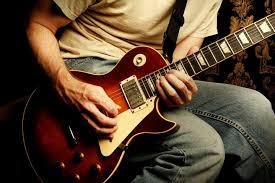

Summary
I am a student in highchool who has taken an interest in coding since the 7th grade.
When I am not in school or at a part-time job, I usually spend my time playing guitar and writing music.
I also enjoy playing video games and sometimes making my own games in unity. When I get out of college, I plan on going into the computer science field.
My Passion

I have always had a passion for coding even through the frustration it can put me through. This is because once you figure the issue for yourself, it leads to
a sense of satisfaction that is beyond euphoric. That is why I continue through the hardships. Beyond that it also allows for a level of creativity which
is one of my personal traits. All of this combined is why I have a passion for coding.
My Hobbies

When I am outside of required activities, I usually spend my time playing guitar and writing music. Music is another big passion of mine and I have been playing
guitar for nearly 4 years. Another hobby of mine is videogames. Videogames have been a part of my life since I was young and many games hold a special place in
my heart. Mainly the Doom franchise.